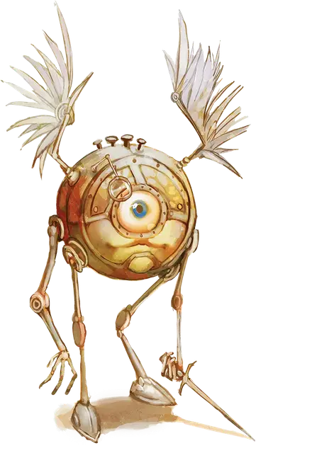

Монодрон
Monodrone
Средний Конструкт, законно-нейтральный

Класс Доспеха 15 (природный доспех)
Хиты 5 (1к8 + 1)
Скорость 30 футов, летая 30 футов
| мод | спас | ||
|---|---|---|---|
| СИЛ | 10 | +0 | +0 |
| ЛОВ | 13 | +1 | +1 |
| ТЕЛ | 12 | +1 | +1 |
| мод | спас | ||
|---|---|---|---|
| ИНТ | 4 | −3 | −3 |
| МДР | 10 | +0 | +0 |
| ХАР | 5 | −3 | −3 |
Чувства истинное зрение 120 футов, пассивное Восприятие 10
Языки Модронский
Опасность 1/8 (25 опыта)
Бонус мастерства +2
Особенности
Косное сознание. Монодрона нельзя заставить действовать так, как противоречит его природе или инструкциям.
Распад. Если монодрон умирает, его тело рассыпается в пыль, оставляя лишь оружие и то, что он нес.
Действия
Кинжал. Рукопашная атака оружием: +3 к попаданию, досягаемость 5 футов, одна цель. Попадание: Колющий урон 3 (1к4 + 1).
Метательное копье. Рукопашная или дальнобойная атака оружием: +2 к попаданию, досягаемость 5 футов или дистанция 30/120 футов, одна цель. Попадание: Колющий урон 3 (1к6).
Описание
Монодрон может выполнять одновременно не более одной простой задачи и передавать одно сообщение длиной не более сорока восьми слов.
См. дополнительно статью: "Бестиарий: Модроны"